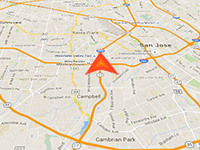

Creating a 3D marker in GPS location

Example of how to dynamically create a 3D marker in the GPS locations of user.
Requirement: Online Maps Location Service component
3D Control
3D Control
Usage instructions:
Add Location Service Component.
Add this script to map GameObject and start the scene.
When GPS location change, the position of the marker will be automatically updated.
Add Location Service Component.
Add this script to map GameObject and start the scene.
When GPS location change, the position of the marker will be automatically updated.
Marker3D_GPS_Example.cs
/* INFINITY CODE 2013-2019 */
/* http://www.infinity-code.com */
using UnityEngine;
namespace InfinityCode.OnlineMapsExamples
{
/// <summary>
/// Example of how to dynamically create a 3D marker in the GPS locations of user.
/// </summary>
[AddComponentMenu("Infinity Code/Online Maps/Examples (API Usage)/Marker3D_GPS_Example")]
public class Marker3D_GPS_Example : MonoBehaviour
{
/// <summary>
/// Prefab of 3D marker
/// </summary>
public GameObject prefab;
private OnlineMapsMarker3D locationMarker;
private void Start()
{
// Gets the current 3D control.
OnlineMapsControlBase3D control = OnlineMapsControlBase3D.instance;
if (control == null)
{
Debug.LogError("You must use the 3D control (Texture or Tileset).");
return;
}
//Create a marker to show the current GPS coordinates.
//Instead of "null", you can specify the texture desired marker.
locationMarker = OnlineMapsMarker3DManager.CreateItem(Vector2.zero, prefab);
//Hide handle until the coordinates are not received.
locationMarker.enabled = false;
// Gets Location Service Component.
OnlineMapsLocationService ls = OnlineMapsLocationService.instance;
if (ls == null)
{
Debug.LogError(
"Location Service not found.\nAdd Location Service Component (Component / Infinity Code / Online Maps / Plugins / Location Service).");
return;
}
//Subscribe to the GPS coordinates change
ls.OnLocationChanged += OnLocationChanged;
ls.OnCompassChanged += OnCompassChanged;
//Subscribe to zoom change
OnlineMaps.instance.OnChangeZoom += OnChangeZoom;
}
private void OnChangeZoom()
{
//Example of scaling object
int zoom = OnlineMaps.instance.zoom;
if (zoom >= 5 && zoom < 10)
{
float s = 10f / (2 << (zoom - 5));
Transform markerTransform = locationMarker.transform;
if (markerTransform != null) markerTransform.localScale = new Vector3(s, s, s);
// show marker
locationMarker.enabled = true;
}
else
{
// Hide marker
locationMarker.enabled = false;
}
}
private void OnCompassChanged(float f)
{
//Set marker rotation
Transform markerTransform = locationMarker.transform;
if (markerTransform != null) markerTransform.rotation = Quaternion.Euler(0, f * 360, 0);
}
//This event occurs at each change of GPS coordinates
private void OnLocationChanged(Vector2 position)
{
//Change the position of the marker to GPS coordinates
locationMarker.position = position;
//If the marker is hidden, show it
if (!locationMarker.enabled) locationMarker.enabled = true;
}
}
}